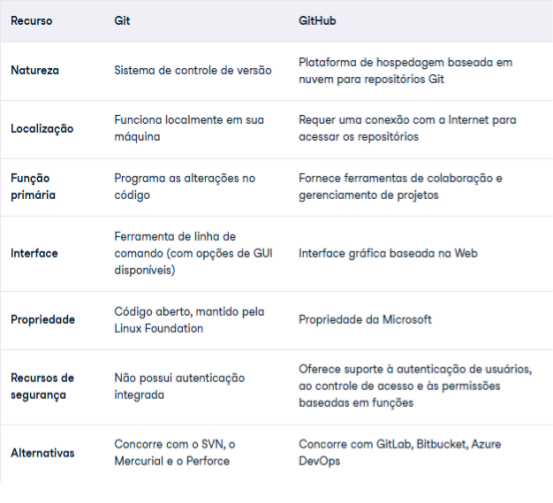

Git pronuncia-se [git] (ou /ɡɪt/ em inglês britânico[2][3]) é um sistema de controle de versões distribuído, usado principalmente no desenvolvimento de software, mas pode ser usado para registrar o histórico de edições de qualquer tipo de arquivo (Exemplo: alguns livros digitais são disponibilizados no GitHub e escrito aos poucos publicamente).
O GitHub é uma plataforma de hospedagem de código-fonte e arquivos com controle de versão usando o Git. Ele permite que programadores, utilitários ou qualquer usuário cadastrado na plataforma contribuam em projetos privados e/ou código aberto de qualquer lugar do mundo.

Um repositório, ou simplesmente repo, é um armazenamento digital centralizado que os desenvolvedores usam para fazer e gerenciar alterações no código-fonte de uma aplicação.
commit refere-se ao processo de tornar permanente um conjunto de alterações, ou seja, de efetivar as alterações. Um uso comum é a conclusão de uma transação. Um commit é o ato de enviar e guardar, ou seja, enviar dados ou códigos para armazenamento em um banco de dados ou em um sistema de controle de versão.
O git clone é um utilitário de linha de comando que é usado para selecionar um repositório existente e criar um clone ou cópia do repositório de destino.
Os sistemas de controle de versão são ferramentas de software que ajudam as equipes de software a gerenciar as alterações ao código-fonte ao longo do tempo. Como os ambientes de desenvolvimento aceleraram, os sistemas de controle de versão ajudam as equipes de software a trabalhar de forma mais rápida e inteligente. Eles são ainda mais úteis para as equipes de DevOps, pois as auxiliam a reduzir o tempo de desenvolvimento e aumentar as implementações bem-sucedidas.
O comando git add adiciona uma alteração no diretório ativo à área de staging. Ele diz ao Git que você quer incluir atualizações a um arquivo específico no próximo commit. No entanto, git add não tem efeito real e significativo no repositório: as alterações não são gravadas mesmo até você executar git commit.
Os arquivos ignorados costumam ser artefatos de desenvolvimento e arquivos gerados por máquina que podem ser derivados da fonte do seu repositório ou que não devem passar por commit.